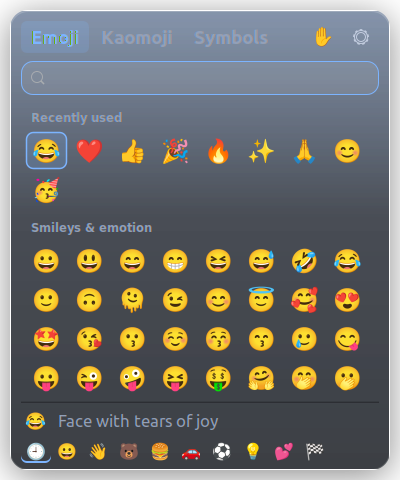
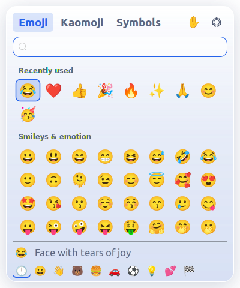

⌨️
Typed where you were writing
Browser, editor, chat, office app or terminal: the emoji lands at your cursor. No copy, no paste, no switching windows.


Missing the Windows emoji panel on Linux? SuperDot brings Win+. to Ubuntu, Mint, Debian, Fedora, Arch and more. Press the shortcut in any app, type to search, and the emoji is typed right where you were writing.
Features
Open it, pick, keep typing. Everything else is there to make that feel instant.
Browser, editor, chat, office app or terminal: the emoji lands at your cursor. No copy, no paste, no switching windows.


Type “heart” and get the emoji, the kaomoji and the symbols together, best match first.
The panel stays on screen while each emoji is typed, with no flicker. Esc closes it.
What you had copied is put back afterwards, and the emoji never shows up in clipboard history.
Choose a skin tone once. The emoji you use most are waiting at the top.
A see-through glass panel in six palettes, light or dark. KDE Plasma also blurs what is behind it.
Shrugs and table flips, plus arrows, currency, math, Greek and accented letters.
One small C program. No Electron, no background polling, nothing to download at runtime.
GNOME, KDE Plasma, Cinnamon, MATE and Xfce. The shortcut is set up for you.
The emoji list is built in. SuperDot never connects to the internet, and passwords on your clipboard are left alone.
Keyboard
The same keys as on Windows, so there is nothing to learn.
Open or close
Just type to search
Move around
Insert it
Insert and close
Emoji → Kaomoji → Symbols
Clear the search, then close
Edges resize, top row moves
Coming from Windows?
The habits carry over, with a few extras.
Install
After installing a package, log out and back in once, or open SuperDot from your app menu. Super+. is set up the first time it runs.
$ sudo apt install ./superdot_amd64.deb$ sudo dnf install ./superdot.x86_64.rpm # openSUSE: $ sudo zypper install ./superdot.x86_64.rpm
PKGBUILD, or download the ready-built package and run sudo pacman -U superdot-x86_64.pkg.tar.zst.$ git clone https://github.com/saikatnjm/superdot.git $ cd superdot/packaging/arch $ makepkg -si
$ git clone https://github.com/saikatnjm/superdot.git $ cd superdot $ ./install.sh # or with your own shortcut: $ ./install.sh --hotkey "<Ctrl><Alt>e"
Something not working? Run superdot --doctor to check the setup on your machine.
FAQ
Install the .deb, then log out and back in once (or open SuperDot from your app menu). From then on, press Super+. in any app, type to search, and click an emoji.
Yes. GNOME's Wayland session on Ubuntu and Fedora is supported, including typing into native Wayland apps. The installer adds a one-line permission so SuperDot can press the paste keys for you.
No. SuperDot remembers what you had copied, borrows the clipboard for a moment to type the emoji, then puts your content back. The emoji is also kept out of clipboard history tools.
SuperDot only shows emoji your installed font can draw, so you never see empty boxes. Update the Noto Color Emoji font to get the newest ones.
Yes. Open the panel, click ⚙, click Shortcut and press a combination that uses Super or Ctrl+Alt.
On KDE Plasma the shortcut is set up for you, and Plasma's own emoji picker gets Meta+. back if you uninstall. On Sway, Hyprland, i3 and COSMIC, SuperDot prints the one line to add to your config.
No. The emoji list is built into the program. There is no telemetry, no analytics and no update check.
Run sudo apt remove superdot, sudo dnf remove superdot or sudo pacman -R superdot. If you used the script: ~/.local/lib/superdot/uninstall.sh. Your desktop shortcuts are put back.
If it saves you a web search every time you need an emoji, a star on GitHub helps other Linux users find it.
Star on GitHub